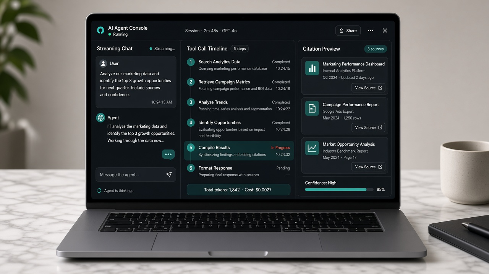
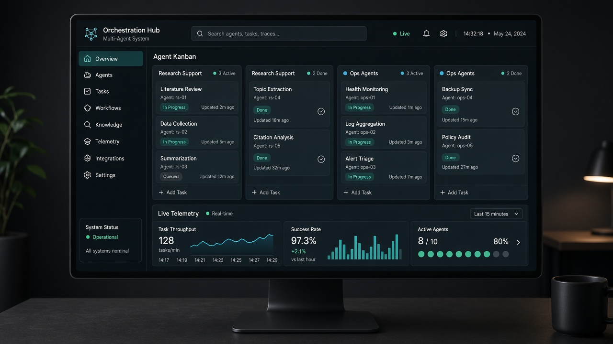
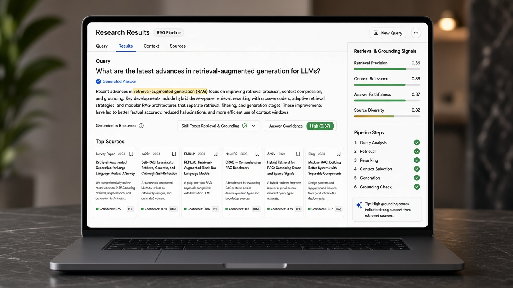
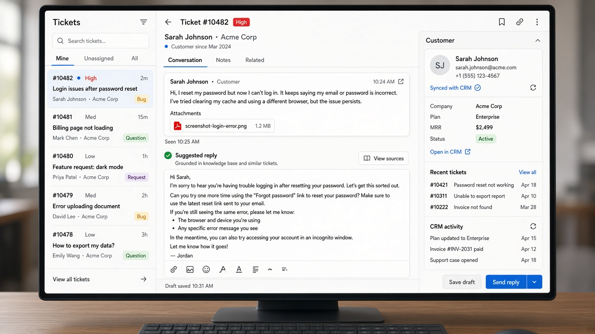
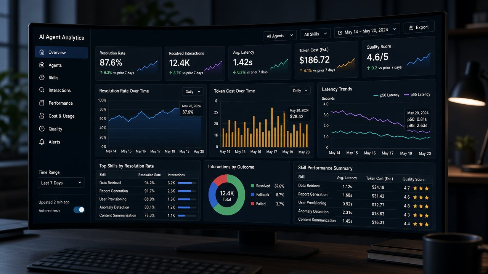
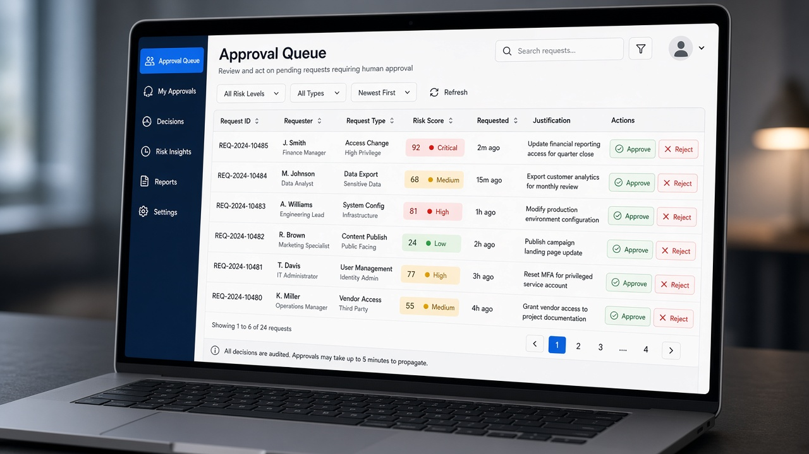
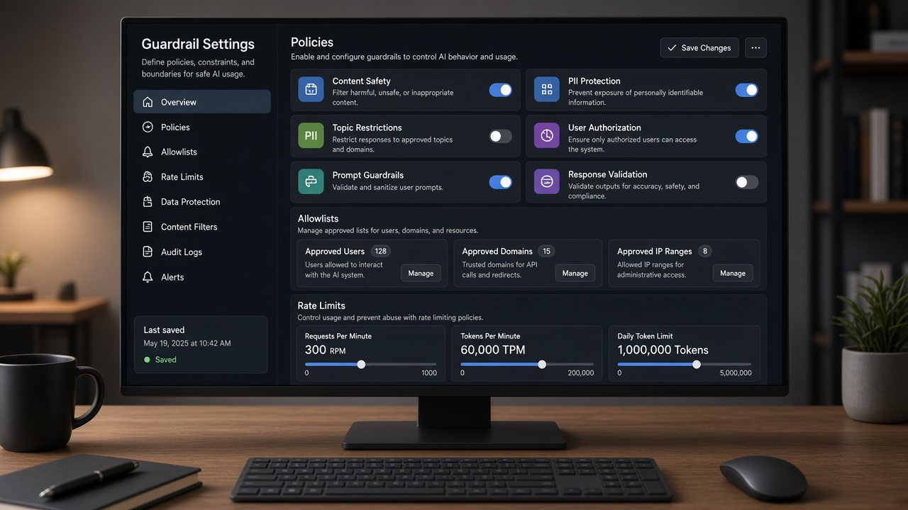

Home
/
Solutions
/
Automation
/
experience
AI & Automation · Experience
AI Agents & Assistants
Custom agents for research, support, and multi-step tasks—with guardrails and human handoff. Product surfaces from live agent consoles to approval queues.
OpenAI
Claude
GHL AI
RAG
Voice AI

Agent console
LLM tool-calling, streaming chat UI, citation grounding.
Skill focus: LLM tool-calling, streaming chat UI, citation grounding.

Orchestration board
multi-agent routing, task queues, status telemetry.
Skill focus: multi-agent routing, task queues, status telemetry.

Research results
RAG retrieval, confidence scoring, source attribution.
Skill focus: RAG retrieval, confidence scoring, source attribution.

Support workspace
helpdesk copilots, GHL inbox sync, knowledge retrieval.
Skill focus: helpdesk copilots, GHL inbox sync, knowledge retrieval.

Agent analytics
eval metrics, token cost controls, latency dashboards.
Skill focus: eval metrics, token cost controls, latency dashboards.

Approval queue
human-in-the-loop gates, risk scoring, audit trails.
Skill focus: human-in-the-loop gates, risk scoring, audit trails.

Guardrails settings
policy engines, allowlists, rate-limit configuration.
Skill focus: policy engines, allowlists, rate-limit configuration.
Need this in production?
LoveThisLife ships the full stack—from agents and automation to storefronts and ERP—with clear handoff.